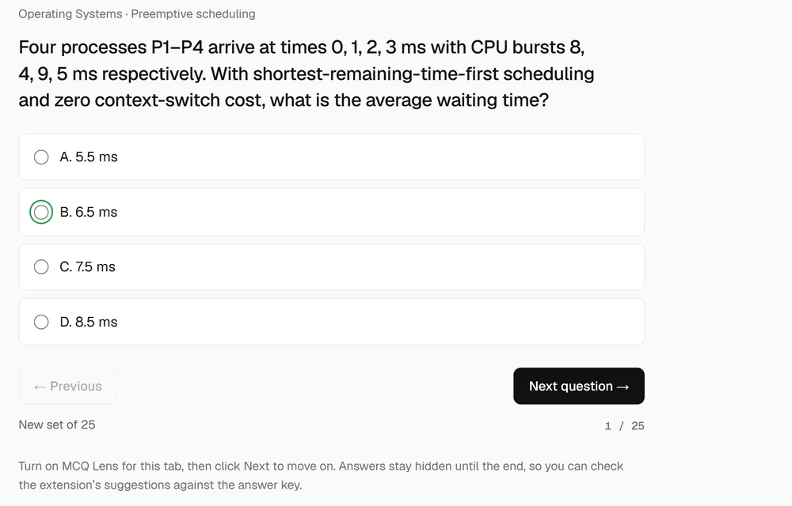
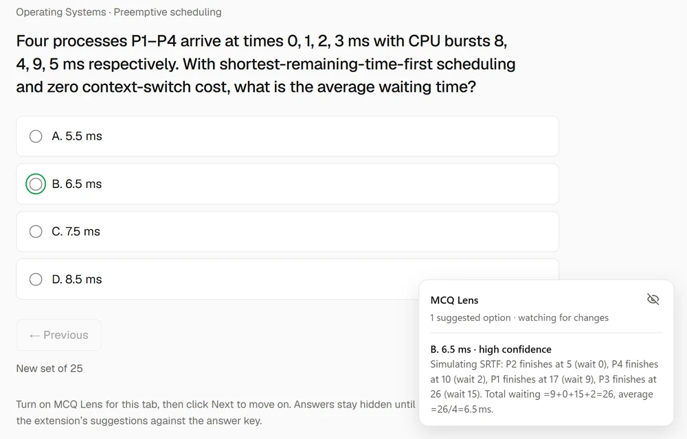
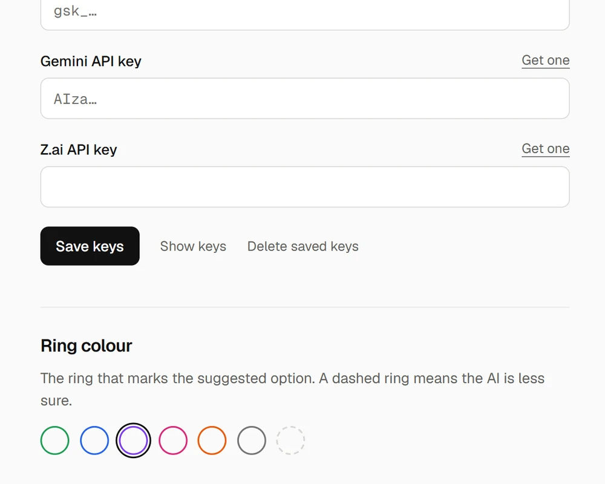

Answers, highlighted on the page.
MCQ Lens is a free browser extension. It reads the multiple-choice question on your screen and rings the suggested option. Press Alt+Shift+Y to see why. No account needed.
Edge: get it from Edge Add-ons. Also for Brave, Opera and Firefox.

After you install
- 1
Turn it on
Open a page with a question, click the MCQ Lens icon and choose Enable on this tab.
- 2
Look for the ring
A thin ring circles the suggested option. Next question? It answers again on its own.
- 3
Ask why
Press Alt+Shift+Y for the reasoning. Press it again to hide it.
What it does
Just a ring
No boxes or labels on the page. A thin ring circles the suggested option’s radio button, so the answer you picked stays visible inside it. A dashed ring means the AI is less sure.

The reasoning, on a shortcut
Press Alt+Shift+Y on the page to see why it picked that option. Press it again, or the hide icon, to put it away.

Your colour, your keys
Pick any ring colour in Settings. Used today’s 50 free questions? Add your own free Groq, Gemini or Z.ai key and keep going with no daily cap.

Questions
Is MCQ Lens free?
Yes. Each install gets 50 free questions a day, with no account or API key. For more, add your own free Groq, Gemini or Z.ai key in Settings.
Which browsers does it work in?
Chrome, Edge, Brave, Opera and Firefox 128 or newer. On Edge you can install it from Edge Add-ons; the install guide covers the rest.
Does it click or submit answers?
No. It only draws the ring. You choose and submit your own answer.
Does it work when the options are images or equations?
Yes. When the options are pictures, MCQ Lens reads a screenshot of the question and rings the radio button of the option it picked.
What does it send, and where?
Only on tabs where you turn it on, the question goes to the MCQ Lens service and its AI providers. It stops when you reload or leave. Read the privacy policy.
Can it be wrong?
Yes. Answers come from AI. Check them, and follow your school’s or test platform’s rules.
Try it on 25 practice questions
Random questions across eight subjects, with the answer key at the end.